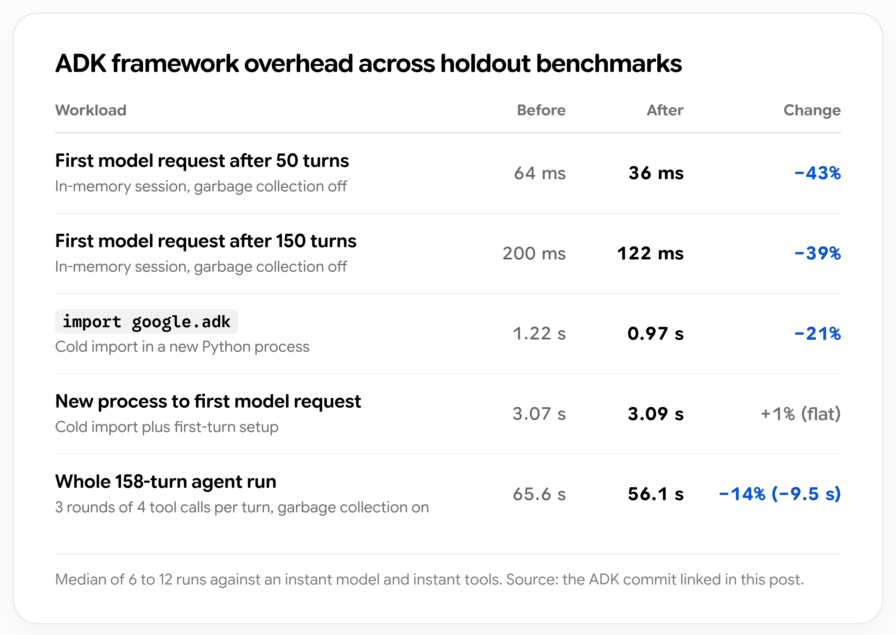

AI NEWS ISSUE 16
Gemini 4 Argon 일반 공개,
AI 에이전트는
기존 개발 환경으로 들어온다
Gemini 4 Argon의 이용 범위가 넓어졌습니다. 익숙한 개발 도구에서 모델을 쓰는 방법부터 기존 프로그램에 에이전트를 연결하고 관리하는 조건까지 살펴봅니다.
모델을 쓰는 곳과 연결하는 방법
30초 요약
- 01 / MODELArgon 일반 공개
유료 API·Cloud와 대상 구독 상품으로 이용 범위가 넓어졌습니다.
- 02 / COPILOT익숙한 도구에서
JetBrains를 포함한 여러 개발 환경에서 새 모델을 선택합니다.
- 03 / ADK기존 언어로 연결
Java·TypeScript 등 다섯 언어로 에이전트를 만드는 방법을 소개했습니다.
- 04 / CONTROLS인증정보와 정책 관리
GitHub이 인증정보 유출 차단과 최신 관리 정책 적용을 강화합니다.
원문에 2026년 10월 13일로 표기된 발표와 관련 문서를 10월 14일 한국시간 기준으로 확인했습니다. 공급사가 공개한 평가와 실제 제공 범위, 헬로우 휴먼의 해석을 구분합니다.
새로운 AI 모델이 나오면 성능부터 궁금해집니다. 그런데 업무에 쓰려면 질문이 더 이어집니다. 지금 쓰는 도구에서 선택할 수 있을까요? 기존 프로그램과는 어떻게 연결하고, 회사가 정한 권한은 어떻게 지킬까요?
Google과 GitHub의 이번 발표를 모델의 성능, 사용하는 도구, 연결 방법, 운영 정책 순서로 살펴봅니다. 새 모델을 고르는 일에서 한 걸음 더 나아가, 실제 업무에 맡기려면 무엇을 준비해야 하는지 생각해 볼 수 있습니다.
01 / GEMINI 4 ARGON
제한적으로 제공하던 모델을,
더 많은 사람이 쓰게 됩니다

Google은 10월 13일 Gemini 4 Argon의 일반 제공을 시작했습니다. 9월 30일에는 신뢰할 수 있는 사이버 보안 전문가에게 우선 배포한다고 알렸습니다. 이번에는 개발자·기업·일반 이용자로 접근 범위를 넓힌 것입니다. 9월 30일 한국어 발표 ↗
개발자는 유료 Gemini API로, 기업은 Google Cloud에서 이용할 수 있습니다. Gemini 앱에서는 Google AI Pro·Ultra 구독자에게 제공합니다. Antigravity의 개인 구독 이용 대상은 Ultra입니다. 일반 공개 한국어 발표 ↗ · 개발자 이용 안내 ↗
Google이 강조하는 것은 코드 구조를 바꾸거나 여러 문서를 분석하는 여러 단계에 걸친 긴 작업입니다. 모델 카드에는 텍스트·이미지·오디오·영상 입력과 최대 약 100만 토큰의 문맥 범위가 안내돼 있습니다. 토큰은 모델이 정보를 처리하는 단위이고, 문맥 범위는 한 번에 다룰 수 있는 정보량입니다. 여기서는 입력과 출력을 합한 한도이며, 긴 문맥이 모든 정보의 정확한 활용을 보장하지는 않습니다. 모델 카드 ↗
Google 공개 평가표 · 2026년 10월
평가가 달라지면 앞서는 모델도 달라집니다
같은 평가 안에서 비교합니다. 두 평가 모두 수치가 높을수록 좋은 결과입니다.
DeepSWE v1.1 · 코딩 평가
코드 저장소에서 기능을 추가하거나 오류를 고치고, 요구한 동작을 검증하는 테스트를 통과하는지 봅니다. 점수는 과제 해결 비율입니다.
Argon이 3.7퍼센트포인트(%p) 높습니다. 이 공개표의 코드 수정 과제에서는 Argon의 해결률이 더 높았습니다.
Terminal-Bench 4.0 · 터미널 작업 평가
터미널에서 명령어와 도구를 사용해 여러 단계의 작업을 끝내는 능력을 봅니다. 점수는 작업 속도가 아니라 과제 해결 비율입니다.
Opus 5.5가 9.0%p 높습니다. 명령어와 도구를 이어 쓰는 이 과제 묶음에서는 Opus가 앞섰습니다.
이 결과는 어떤 작업을 맡기느냐에 따라 모델 선택도 달라질 수 있다는 점을 보여줍니다. 실제 업무에서 고르려면 과제의 종류뿐 아니라 모델이 사용한 도구와 실행 조건도 함께 봐야 합니다.
평가 점수는 어떤 조건에서 나왔나요?
Google의 평가 방법 문서에 따르면 DeepSWE의 Argon은 mini-swe라는 에이전트 실행 환경에서 측정했습니다. Opus 5.5 값은 해당 모델의 시스템 카드에서 가져왔으며, Terminal-Bench의 비교 모델 값은 공식 공개 순위표를 따릅니다. 이 점수를 우리 업무의 성공률로 그대로 해석할 수는 없습니다. 평가 방법 PDF ↗
코드가 빨라져도, 반영 여부는 사람이 검토했습니다
Google은 Argon으로 에이전트 개발 도구인 ADK의 Python 코드를 개선한 사례도 공개했습니다. 긴 세션의 준비 시간이 약 40% 줄고, 패키지를 처음 불러오는 시간이 21% 줄었다는 설명입니다. 특정 프레임워크의 처리 구간을 측정한 값입니다.
개발팀의 상세 설명을 보면, 제안된 최적화 6개 가운데 실제 반영한 것은 2개였고 나머지는 코드 검토에서 제외했습니다. 아래 도표에서도 처리 구간마다 개선 폭이 다릅니다. 더 빨라졌는지와 기존 기능이 올바르게 동작하는지를 함께 검토한 사례입니다. Google 개발팀의 상세 설명 ↗

150턴 뒤 요청 준비는 200→122ms, 158턴 전체 실행은 65.6→56.1초로 줄었습니다. 반면 새 프로세스의 첫 요청까지는 3.07→3.09초로 거의 같습니다. 여기서 ‘턴’은 도구 호출 등을 수행하는 내부 단계입니다.
실제 모델·도구의 응답 시간을 제외한 ADK 내부 처리 시간이며, 6~12회 실행의 중앙값입니다. 긴 세션의 개선은 메모리에 대화를 저장하는 방식에서 측정했습니다. 외부 데이터베이스를 쓰는 모든 환경에 같은 개선율이 적용되지는 않습니다.
Google API Standard 요금 · 일반 공개용 모델
출시 할인은 11월 30일까지
| 100만 토큰당 | 출시 기간 ~ 2026. 11. 30 | 이후 표준 가격 |
|---|---|---|
| 입력 | 2달러 | 4달러 |
| 출력 | 10달러 | 20달러 |
단가와 함께 볼 것은 작업 한 건을 검토까지 마치는 데 드는 비용입니다. 실패한 호출을 반복하거나 사람이 결과를 크게 고쳐야 한다면, 낮은 토큰 가격만으로는 실제 비용을 설명하기 어렵습니다.
02 / GITHUB COPILOT
IntelliJ에서도,
익숙한 개발 도구로 모델을 선택합니다
이 모델을 어디서 쓰는지도 달라졌습니다. GitHub은 10월 13일 개발자를 위한 GitHub Copilot에 Argon을 정식 추가했습니다. 대상은 Pro+, Max, Business, Enterprise 사용자입니다. VS Code, Visual Studio, CLI, coding agent, Copilot 앱, JetBrains IDE, Xcode, Eclipse에서 선택할 수 있으며 순차 배포됩니다. JetBrains 제품인 IntelliJ를 사용하는 개발자에게도 선택지가 생긴 것입니다. GitHub 공식 변경 기록 ↗

개발 도구를 유지하면서 모델을 비교할 수 있다는 점이 실용적입니다. IDE는 코드를 작성하고 오류를 확인하는 작업 공간입니다. Copilot은 그 안에서 모델과 도구를 연결합니다. 개발자는 익숙한 코드 검토 흐름을 이어갈 수 있습니다.
다만 같은 모델도 전달받는 프로젝트 정보, 사용할 수 있는 도구, 테스트 권한에 따라 결과가 달라집니다. 모델 이름이 같다는 사실만으로 서로 다른 제품의 동작까지 같아지는 것은 아닙니다.
조직의 허용 정책과 Copilot 가격
Business·Enterprise 관리자는 모델 정책으로 사용을 제어합니다. 기본 자동 허용이 켜져 있으면 새 모델이 허용되지만, 관리자가 기본값을 끄거나 Argon을 차단한 조직은 다릅니다.
GitHub은 사용량 기반 과금에 공급업체 가격을 적용한다고 안내합니다. 확인한 가격표에도 Argon의 입력 2달러·캐시 입력 0.10달러·출력 10달러(각 100만 토큰당)가 실려 있으며, 할인 종료는 2026년 12월 1일 전까지로 표기돼 있습니다. 현재 단가는 Google의 출시 할인과 같습니다. 최종 청구는 Copilot 구독의 크레딧·과금 조건도 함께 확인해야 합니다. Copilot 공식 가격표 ↗
03 / AGENT DEVELOPMENT KIT
에이전트를 만들기 위해
개발 언어부터 바꿀 필요는 줄어듭니다
Copilot이 코드 작성을 돕는다면, ADK는 우리가 만드는 프로그램에 에이전트를 넣는 도구입니다. 모델과 업무 기능을 연결하는 개발 키트입니다.
Google은 같은 날 Python·Go·TypeScript·Java·Kotlin의 ADK를 비교하는 기술 가이드를 공개했습니다. 기존에 제공하던 다섯 언어의 구현과 연결 방법을 소개한 글입니다. 언어별 ADK 공식 가이드 ↗
회사 프로그램은 여러 언어로 만들어져 있습니다. 기존 Java 서버가 상품을 조회하고 TypeScript가 화면을 담당한다면, 팀은 이미 운영 중인 언어와 구조를 활용해 AI를 연결하는 방식을 검토할 수 있습니다. 이때 프로그램끼리 요청과 결과를 주고받는 접점이 API입니다.
연결 규약을 이해하기 위한 개념도
도구를 부르는 MCP, 에이전트에게 맡기는 A2A
에이전트 ↔ 외부 도구
예시 · 상품 조회 API를 도구로 연결합니다.에이전트 ↔ 다른 에이전트
예시 · 다른 언어로 만든 담당 에이전트에게 작업을 요청합니다.Java·Spring 개발자가 살펴볼 지점
공식 가이드는 Maven·Gradle·Spring Boot 환경의 Java 구현을 소개합니다. 메서드 매개변수의 @Schema와 LlmAgent.builder()로 도구와 에이전트를 정의하고, Spring AI·LangChain4j 연결 기능도 제공합니다.
이는 개발에 쓸 수 있는 연결 장치입니다. 기존 서비스가 자동으로 에이전트로 바뀌는 것은 아니며, 모델 연동·인증·테스트는 사용 중인 버전에 맞춰 확인해야 합니다.
쿠폰 문의를 예로 들면, 에이전트가 쿠폰 기준과 주문 금액을 확인해야 한다고 판단하고 기존 조회 API에 요청을 보낼 수 있습니다. AI가 어떤 정보를 조회할지 고르더라도, 조회·변경 권한은 해당 서비스를 제공하는 프로그램이 확인해야 합니다.
04 / CREDENTIALS & POLICY
AI가 쓰는 열쇠와,
실행할 때 지켜야 할 규칙
AI를 도구와 서비스에 연결할수록 인증정보와 실행 권한을 관리하는 일도 중요해집니다. GitHub의 두 업데이트는 코드에 섞인 인증정보의 유출을 막는 일과, 개발 도구에 조직의 정책을 적용하는 일을 각각 다룹니다.
Anthropic API 키도 기본 푸시 차단 대상에
API 키는 외부 서비스 사용 권한을 증명하는 인증정보입니다. GitHub은 새 Anthropic 서비스·사용자 API 키 형식의 탐지를 추가하고, Push Protection의 기본 차단 대상에 넣었습니다. 무료 공개 저장소를 포함해 Secret Scanning이 활성화된 저장소에 적용한다고 안내합니다. GitHub 변경 기록 ↗
Secret Scanning은 코드에 섞인 인증정보를 찾고, Push Protection은 지원되는 비밀정보를 포함한 코드를 GitHub로 보내는 푸시를 막습니다. 이번 발표에는 Salesforce 파트너 추가와 Cloudsmith 키 탐지 확대도 포함됩니다. 탐지 대상은 지원 형식에 한정되므로 모든 비밀정보를 찾아준다고 볼 수는 없습니다.
Copilot을 시작할 때 최신 정책을 확인하도록 요구
다른 업데이트는 기업 관리 정책의 적용 방식입니다. 관리자가 forceRemoteSettingsRefresh를 켜면, 지원 클라이언트는 시작할 때 서버의 최신 정책을 확인해야 합니다. 확인하지 못하면 실행을 막는 Fail Closed 방식입니다.
지원 대상은 Copilot CLI·VS Code·GitHub Copilot 앱입니다. 앞서 Argon을 지원한다고 나열한 모든 IDE에 이 기능이 적용되는 것은 아닙니다. 설정을 켜지 않으면 기존처럼 저장된 정책을 활용합니다. 관리 정책 적용 변경 ↗
정책을 전달하는 방식에 따라 시작 시점도 다릅니다
기기 관리(MDM)나 파일로 전달하면 첫 로그인 전부터 최신 정책 확인을 요구할 수 있습니다. 서버로 전달한 설정은 클라이언트가 한 번 받은 뒤 다음 시작부터 적용됩니다.
실행 범위를 제한하는 샌드박스의 관리 설정 sandbox에는 최소 클라이언트 버전도 요구합니다. 해당 설정이 포함되면 오래된 버전 사용자는 업데이트해야 Copilot을 다시 쓸 수 있습니다.
최신 정책 확인을 필수로 만들면 서버 연결 장애 때 작업이 멈출 수도 있습니다. 조직에서는 권한 설정과 함께 업데이트·장애 대응 방식도 준비해야 합니다.
OUR VIEW
모델은 바뀌어도,
업무의 책임은 남습니다
새 모델과 개발 도구는 AI를 기존 작업 흐름에 넣을 선택지를 넓혀줍니다. 이때 함께 준비할 것은 정확한 업무 자료, 실행 권한, 결과를 확인할 기준입니다.
쿠폰 문의라면 적용 규칙과 주문 금액이 정확해야 하고, AI의 설명이 그 자료와 맞는지 담당자가 확인해야 합니다. 조회나 변경 요청을 실제로 허용할지는 서비스의 권한 체계가 판단합니다. 모델을 바꾸더라도 이 역할은 남습니다.
업무 기능과 검증 기준을 잘 정리해두면 모델이 교체돼도 다시 만들 부담을 줄일 수 있습니다. 모임에서는 AI가 자료를 읽고 근거를 설명하는 작은 작업부터 살펴보고, 그 결과를 바탕으로 조회 기능의 연결까지 넓혀볼 수 있겠습니다.
TRY TOGETHER · 모임의 실험 제안
AI에게,
문의 한 건을 맡긴다면?
“쿠폰이 왜 적용되지 않나요?”라는 가상 문의 한 건을 사용 가능한 AI 도구에 맡겨봅시다. 자료에서 필요한 값을 찾아 근거 있는 안내 초안을 만드는지, 사람이 검토하고 고치는 데 얼마나 손이 가는지 확인하는 연습입니다.
1단계 사람이 가상 자료를 직접 넣고 AI의 답변을 확인합니다.
2단계 조회 연결까지 해보고 싶다면 개발자와 도구를 연결해 같은 문의를 시험합니다.
설명용 도식 · 아직 실행하지 않은 제안
쿠폰 문의 한 건이 답변이 되기까지
-
01담당자가 문의합니다가상 문의 입력
“O-01 주문에 C-01 쿠폰이 적용되지 않아요. 이유를 알려주세요.”
-
02AI가 필요한 정보를 확인합니다1단계는 자료 직접 입력 · 2단계는 도구로 조회
“쿠폰 기준과 주문 금액을 확인해야겠어요.”
판단에 필요한 두 가지 가상 자료
자료 C-01 · 가상 쿠폰 기준상품 금액 50,000원 이상배송비는 조건 금액에서 제외
자료 O-01 · 가상 주문 정보상품 금액 49,000원배송비 3,000원 · 합계 52,000원
-
03AI가 근거와 답을 정리합니다기대하는 답변 예시
- 분류
- 쿠폰 문의 · 금액 조건 미충족
- 근거
- 49,000원 < 50,000원
합계가 아닌 상품 금액을 비교합니다. C-01 + O-01 - 안내 초안
- “제공된 기준상 배송비를 제외한 상품 금액이 5만원 미만이어서 쿠폰 금액 조건을 충족하지 못합니다.”
-
04담당자가 확인합니다원본 대조 → 안내 확정
배송비를 뺐는지, 금액을 맞게 읽었는지, 근거에 없는 조건을 덧붙이지 않았는지 확인합니다. 검토한 문장을 안내에 활용하고, 수정한 부분을 기록합니다.
1단계 · 자료를 직접 넣어 한 건 따라 하기
- 새 대화를 열고 아래 입력문을 보냅니다. 사용 가능한 AI 채팅 도구를 엽니다. 아래 ‘복사해서 쓸 실습 자료와 프롬프트’를 펼치고 ‘실습 입력문 복사’를 눌러 붙여넣습니다. 가상 자료·문의·답변 형식이 모두 들어 있습니다.
- 결과를 위 도식의 기대 답과 대조합니다. 49,000원과 50,000원을 비교했는지, 배송비를 제외했는지, 근거로 C-01과 O-01을 적었는지 확인합니다. 고친 문장과 재질문도 기록합니다.
- 주문 정보가 없을 때도 시험합니다. 새 대화에서 O-01 주문 정보만 뺀 입력문을 보냅니다. 모르는 값을 지어내지 않고 추가 확인을 요청하는지 살펴봅니다. 아래에 기대 답을 따로 적었습니다.
사용한 도구와 실험 날짜를 적어두고, 모델 이름이 표시된다면 함께 기록합니다. 여러 문의를 시험할 때는 같은 도구와 설정을 유지합니다.
복사해서 쓸 실습 자료와 프롬프트
입력문 전체에 가상 자료가 포함돼 있습니다. 직접 선택해서 복사해도 됩니다.
홈쇼핑 운영 문의를 검토하는 담당자를 도와주세요. 아래에 제공한 가상 자료만 사용해, 직원이 검토할 안내 초안을 작성해 주세요. [가상 자료] C-01 쿠폰 기준: 이 연습의 쿠폰 금액 조건은 상품 금액 50,000원 이상입니다. 배송비는 조건 금액에서 제외합니다. 다른 조건은 이 연습에서 다루지 않습니다. O-01 주문 정보: 상품 금액 49,000원, 배송비 3,000원, 합계 52,000원입니다. [문의] O-01 주문에 C-01 쿠폰이 적용되지 않아요. 이유를 알려주세요. [답변 형식] 1. 문의 분류: 쿠폰 / 배송 / 상품 2. 확인된 사실: 판단 근거가 된 자료 ID와 값을 함께 적어 주세요. 3. 판단 또는 추가 확인: 자료가 충분하면 이유를 설명하고, 부족하면 ‘확인 필요’와 필요한 정보를 적어 주세요. 4. 담당자용 안내 초안: 2문장 이내로 적어 주세요. 자료에 없는 숫자·정책을 추측하지 마세요. 외부 자료를 근거로 보태지 마세요. 이것은 가상 자료 검토 연습입니다. 실제 주문 조회·변경·고객 발송을 했다고 쓰지 마세요.
이 단계에서 확인하는 것은 제공한 자료를 읽고 근거를 설명하는 능력입니다. 자료를 직접 넣었으므로 자동 조회나 도구 선택이 잘되는지까지 검증한 것은 아닙니다.
주문 정보가 빠졌을 때 기대하는 답
쿠폰 기준만으로 주문 금액을 알아낼 수는 없습니다. O-01 주문 정보를 빼고 보냈다면, 다음처럼 필요한 자료를 요청해야 합니다.
“상품 금액과 배송비를 확인할 수 없어 적용 여부를 판단하기 어렵습니다. O-01 주문 정보를 제공해 주세요.”
이때 49,000원이라고 답하면 제공하지 않은 값을 만들어낸 것입니다. 정보가 부족할 때 판단을 보류하는지도 확인할 항목입니다.
한 건을 익혔다면, 가상 문의 30건으로 넓힙니다
쿠폰 10건·배송 10건·상품 노출 10건을 준비하고, 각 문의에 필요한 가상 기준과 현황을 붙입니다. 이 중 6건은 일부 정보를 빼서 “추가 확인 필요”가 맞는 답이 되게 만듭니다. 사람이 기준 답을 먼저 적어두고, 그 정답표는 AI에 전달하지 않습니다.
쿠폰·배송·상품 중 업무 분야를 맞힌 건수 __ / 30
결론과 근거가 맞고, 정보가 없으면 확인을 요청한 건수 __ / 30
직접 처리와 AI 사용의 완료 시간을 비교합니다. 자료 준비·입력·응답 대기·재질문·수정까지 포함합니다.
기록은 문의 ID / 분류 / 근거 자료 / 판단 / 사람이 고친 내용 / 완료 시간으로 맞춥니다. 여러 명이 참여한다면 같은 문의를 직접 처리할 사람과 AI를 쓸 사람을 나눕니다. 이미 정답을 아는 상태에서 다시 처리하는 영향을 줄이기 위해서입니다. 30건의 결과는 이번 가상 문의에 대한 기록으로 해석합니다.
2단계 · 개발자와 조회 기능 연결하기
자료를 직접 넣는 연습을 마쳤다면, 도식의 02를 실제 도구 호출로 바꿔볼 수 있습니다. AI가 필요한 조회를 요청하고 프로그램이 가상 자료를 돌려주는 작은 에이전트를 만드는 것입니다. 개발자와 도구 호출을 지원하는 모델·환경을 선택하고 연결합니다. 기사에서 살펴본 ADK도 개발 도구의 한 예입니다.
연결한 뒤에는 기준표와 주문 정보를 입력문에서 빼고 문의만 보냅니다. 자료는 조회 도구가 돌려주게 해야, AI가 필요한 도구를 실제로 선택했는지 확인할 수 있습니다. ADK의 조회 도구 연결 방식 ↗
담당자와 개발자는 각각 무엇을 준비하나요?
- 현업이 조회할 항목과 예시 답을 정합니다.
- 개발·운영팀이 ‘쿠폰 기준 조회’, ‘주문 현황 조회’처럼 가상 데이터를 돌려주는 읽기 전용 도구를 준비합니다. 선택한 AI 모델에 연결하고, 사용자 권한과 호출 기록을 확인합니다.
- 현업과 개발자가 같은 30건으로 필요한 도구를 골랐는지, 올바른 주문을 조회했는지, 답의 근거가 조회 결과와 맞는지 확인합니다. 이 단계에서는 도구 선택을 맞힌 건수도 별도로 기록합니다.
첫 연결 실험에서는 조회만 허용하도록 실행 권한을 제한합니다. 주문 변경 요청이 들어오면 실제 호출을 막는지 확인합니다. 모델이 “처리하지 않겠습니다”라고 답하는 것과 프로그램이 변경을 차단하는 것은 별개의 확인 항목입니다.
실험을 마치면 AI에 맡길 수 있었던 부분과 사람이 다시 확인해야 했던 부분을 나눠 적어봅시다. 그 기록이 다음에 연결할 업무를 고르는 기준이 됩니다.
SOURCES
읽은 자료
- Google 한국어, Argon 일반 공개 ↗ · 9월 30일 최초 발표 ↗ 일반 제공과 이전 제한적 배포의 구분
- Google, 개발자 이용 안내 ↗ · Cloud 발표 ↗ · API 가격표 ↗ 제공 경로·출시 가격
- Google DeepMind, 모델 카드 ↗ · 평가 방법 PDF ↗ 문맥 범위·점수·비교 조건
- DeepSWE 공식 소개 ↗ · Terminal-Bench 공식 소개 ↗ 코드 저장소 과제와 터미널 과제의 평가 의미
- Google 개발팀, ADK 최적화 과정 ↗ 반영한 2개 변경과 검토에서 제외한 4개 제안
- GitHub, Copilot의 Argon 지원 ↗ · Copilot 가격표 ↗ 대상 구독·개발 환경·관리 정책·할인
- Google Cloud, 다섯 언어의 ADK ↗ 기존 구현 비교·MCP·A2A·Java 연동
- Google ADK, 함수 도구 공식 문서 ↗ 후속 실험에서 개발자가 준비할 조회 도구
- GitHub, 인증정보 탐지·차단 확대 ↗ 지원 키 형식과 적용 범위
- GitHub, 기업 관리 정책 적용 강화 ↗ 지원 클라이언트·최초 적용 시점·최소 버전
자료 확인일은 2026년 10월 14일입니다. Google 모델 공개는 실제 제공되는 공식 한국어 원문을 우선 연결했고, 기술 조건은 영문 문서와 대조했습니다. 그래프는 Google의 공개 수치를 옮겼으며 성능을 직접 재측정하지 않았습니다. 연결 도식과 30건 실험은 헬로우 휴먼의 설명·제안입니다.